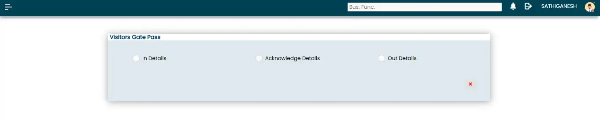
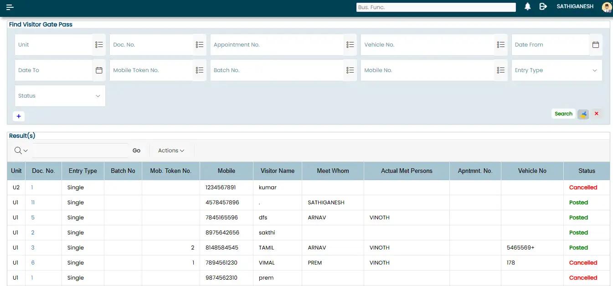
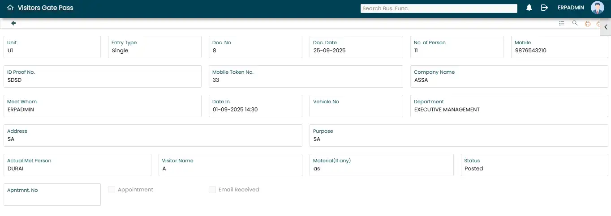
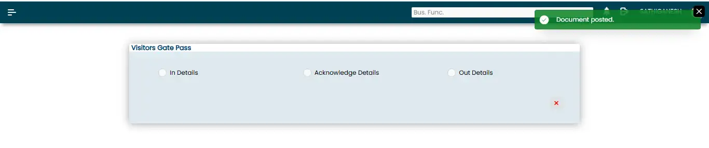

<div data-category="Gate Entry" data-title="Visitor Gate Pass" data-updated="January 23, 2026" data-contributors="RoadmapIT" data-breadcrumb="Home,Gate Entry,Visitor Gate Pass">
  <div class="page-content">
    <h5>Visitor Gate Pass</h5>
    <p>A visitor gate pass is a document or card issued to visitors when they enter a facility or premises. It serves as a temporary identification and authorization for the visitor to access specific areas within the facility. The visitor gate pass ensures that only authorized individuals can enter and helps maintain security and accurate records of all visitors.</p>

    <h5>Navigation path:</h5>
    <p class="fs-6">Supply Chain Management \ Gate Entry \ Transaction \ Visitor Gate Pass</p>

    
    <ul style="list-style-type: none; align-content: center">
      <li class="mouse-icon">In Details – To Create the visitor pass use this option</li>
      <li class="mouse-icon">Acknowledge Details – Acknowledge details can be viewed in this screen</li>
      <li class="mouse-icon">Out Details – Out Details can be viewed in this screen</li>
      <li class="mouse-icon">Select In Details option.</li>
    </ul>

    
    <ul style="list-style-type: none; align-content: center">
      <li class="mouse-icon">User can filter the respective documents by entering the search parameters at the header.</li>
      <li class="mouse-icon">Using Search, system displays the results relevant to the search parameters entered.</li>
      <li class="mouse-icon">On-click; the corresponding transaction record will be displayed.</li>
      <li class="mouse-icon">
        Using
        
        icon, entered search parameters can be cleared.
      </li>
      <li class="mouse-icon">
        To close the screen, use
        <i class="bi bi-x fs-4 mx-2 text-danger"></i>
        icon.
      </li>
      <li class="mouse-icon">
        By Clicking the
        <i class="bi bi-plus fs-4 mx-2 text-primary"></i>
        Add button in the find screen, we can create a visitor Gate Pass document
      </li>
    </ul>

    
    <ul style="list-style-type: none; align-content: center">
      <li class="mouse-icon">Select the Unit</li>
      <li class="mouse-icon">Select the Entry Type as Single or Group</li>
      <li class="mouse-icon">Enter the No. of Person</li>
      <li class="mouse-icon">Enter the mobile Number</li>
      <li class="mouse-icon">Enter the ID Proof No.</li>
      <li class="mouse-icon">If Required, enter the mobile token number</li>
      <li class="mouse-icon">Enter the Company Name</li>
      <li class="mouse-icon">Select the meet whom person from LOV</li>
      <li class="mouse-icon">Select the Date In</li>
      <li class="mouse-icon">If required, enter the vehicle number</li>
      <li class="mouse-icon">Select the department</li>
      <li class="mouse-icon">Enter the address</li>
      <li class="mouse-icon">Enter the purpose of visit</li>
      <li class="mouse-icon">Enter the visitor name</li>
      <li class="mouse-icon">Click <i class="bi bi-check-lg fs-4 mx-1 text-success"></i> to Save</li>
      <li class="mouse-icon">Click on post button and the document will be posted</li>
    </ul>

    
  </div>
</div>
